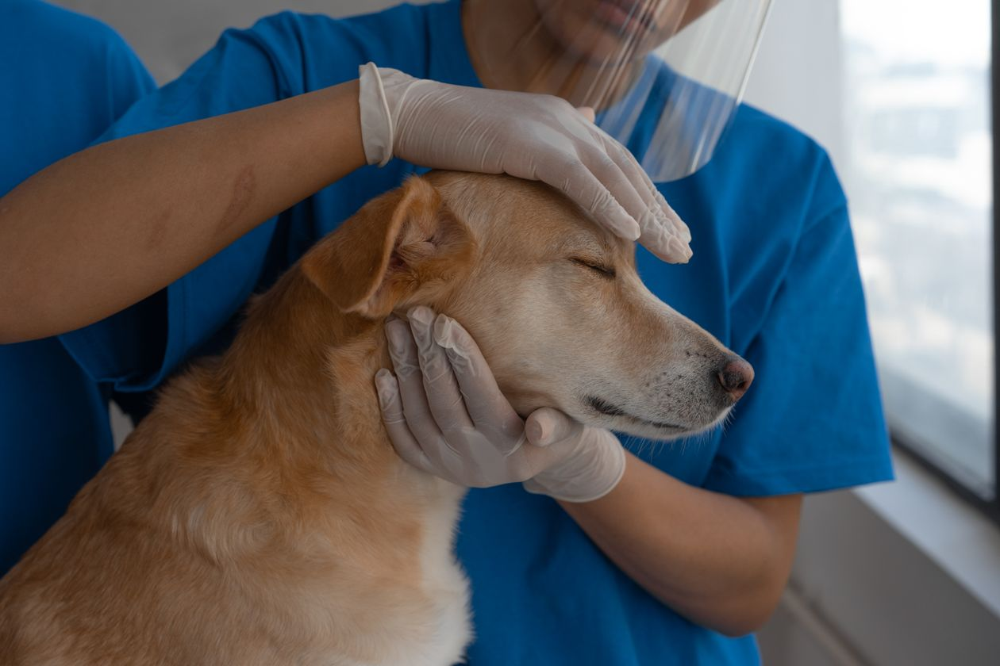
Consulta y medicina preventiva
Controles de salud, planes de vacunación y desparasitación, y seguimiento personalizado según edad, raza y estilo de vida.
En Alba combinamos especialidades médicas, diagnóstico por imágenes e internación propia para cuidar a tu mascota en cada etapa de su vida, con un equipo que te explica todo, sin vueltas.
4,9 de 5 en reseñas de Google de nuestros clientes
Desde el primer control de cachorro hasta los cuidados del animal mayor, con historia clínica digital y recordatorios de vacunas y controles.

Controles de salud, planes de vacunación y desparasitación, y seguimiento personalizado según edad, raza y estilo de vida.
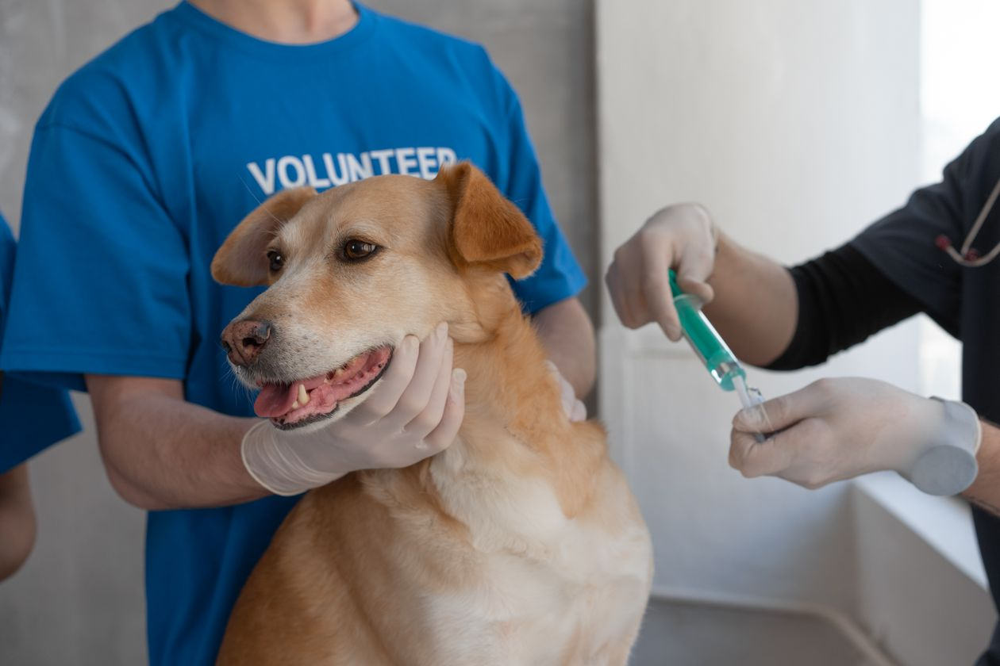
Calendario completo para cachorros, adultos y seniors, con aviso previo a cada vencimiento para que nunca se te pase una dosis.
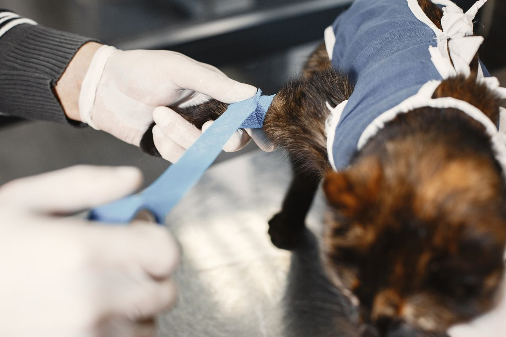
Atención de heridas, vendajes, yesos y seguimiento de fracturas, con control radiográfico en la misma clínica.
6 especialidades médicas y diagnóstico en la clínica. Elegí el área que necesitás y mirá cómo podemos acompañar a tu mascota.
Contanos qué cambios notás en tu mascota. Un mismo equipo sigue su historia y te explica el diagnóstico y el tratamiento.
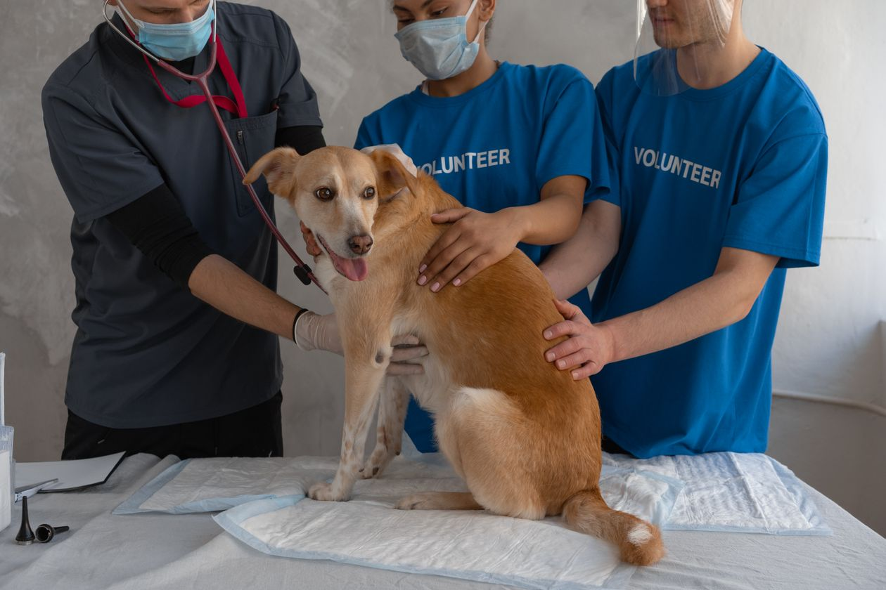
Conocé cómo acompañamos a tu mascota antes, durante y después de la cirugía, con quirófano e internación en la clínica.
Si notás cambios en los ojos de tu mascota, contanos qué pasa. Revisamos su salud ocular y te explicamos los cuidados.
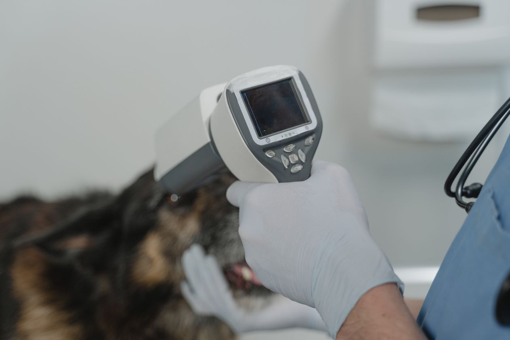
Seguí el control cardíaco de tu mascota con estudios en la clínica y explicaciones claras sobre cada resultado.
Cuidá también su salud bucal. Revisamos la boca de tu mascota y te explicamos qué necesita para prevenir dolor e infecciones.
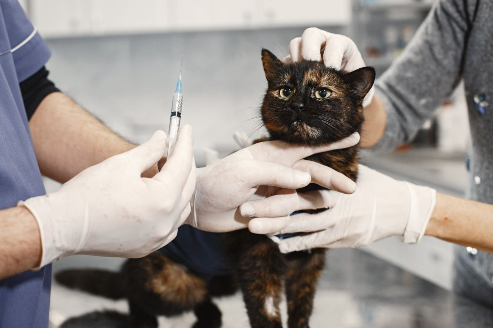
Traé a tu gato a un espacio pensado para él: separado de los perros y con un manejo que ayuda a bajar su estrés.
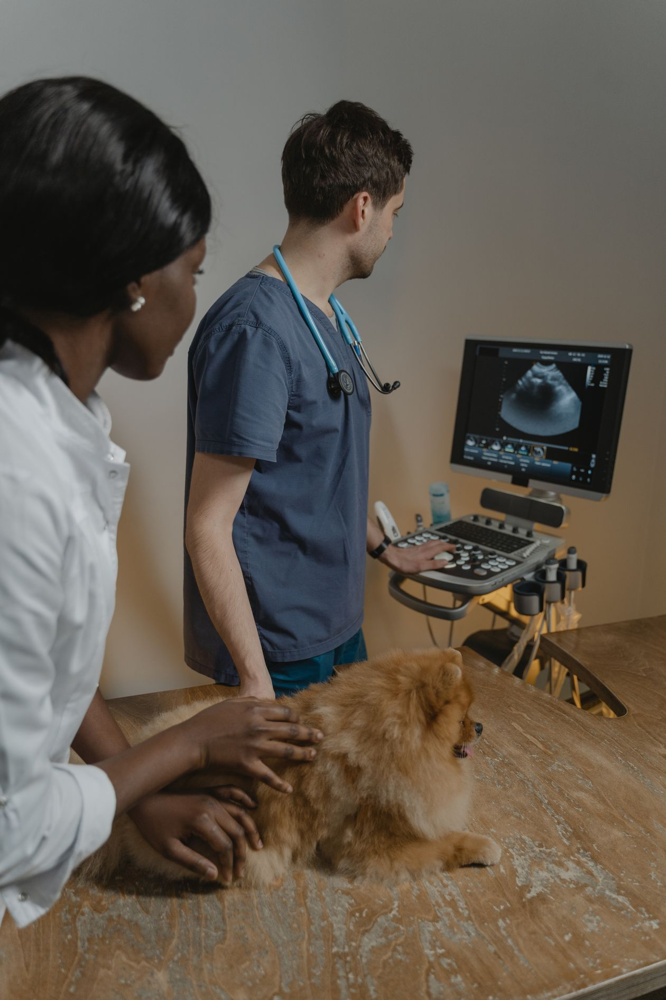
Recibí los resultados y una explicación paso a paso, con ecografía, radiología digital y laboratorio en la misma clínica.
Consultorios equipados para perros y gatos, con área de imágenes y laboratorio integrados.
Quirófano con monitoreo anestésico permanente e internación con control las 24 horas.
Espera e internación exclusivas para gatos, lejos de los perros, para una visita tranquila.
Arrastrá el control y mirá el proceso: del baño al terminado, con productos hipoalergénicos y secado sin estrés.
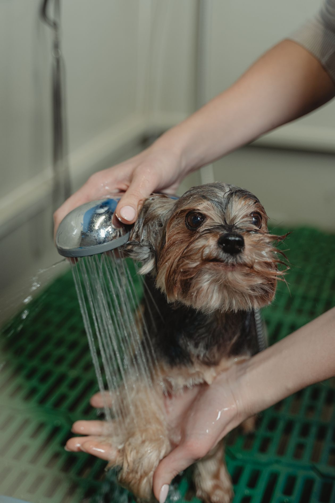
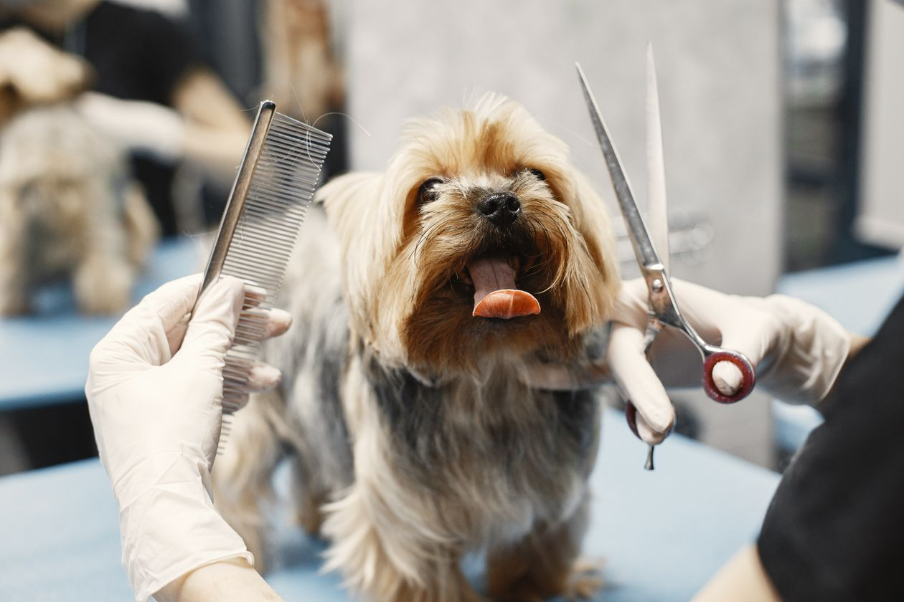
AntesDespués14 profesionales en un equipo estable, que conoce a cada paciente por su nombre y sigue su historia en el tiempo.
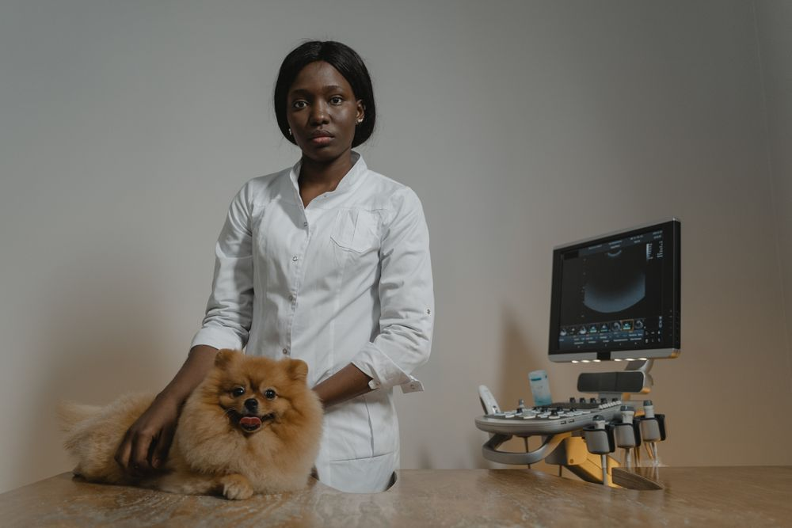
Más de 15 años de clínica de pequeños animales y formación continua en medicina interna.
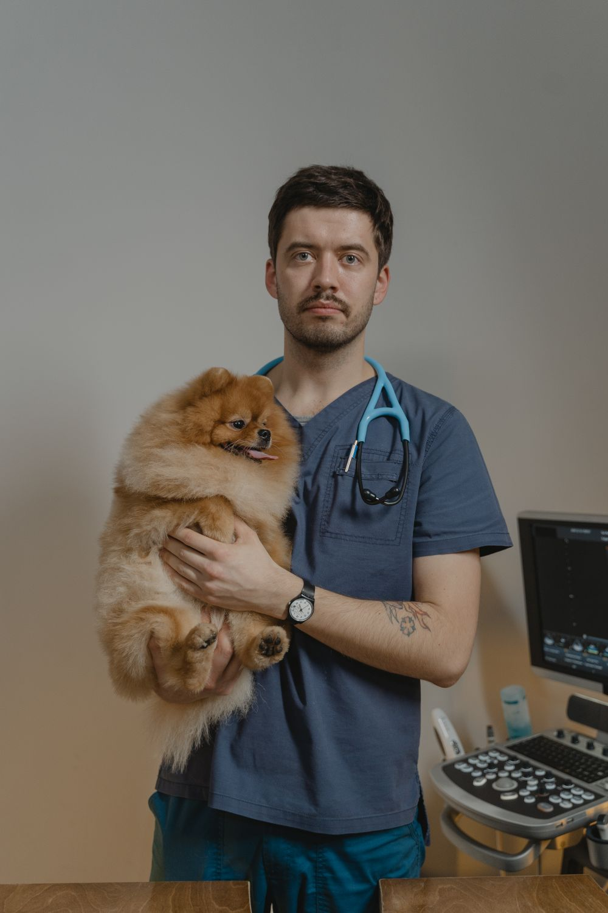
Cirujano del equipo, a cargo del quirófano y de los seguimientos posoperatorios.
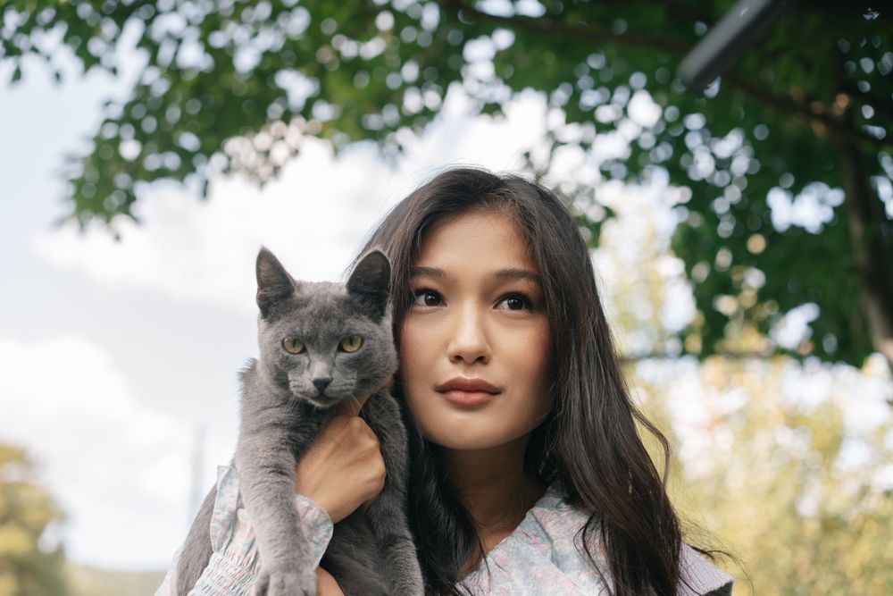
Especialista en gatos y en diagnóstico por imágenes: ecografías y radiología digital.
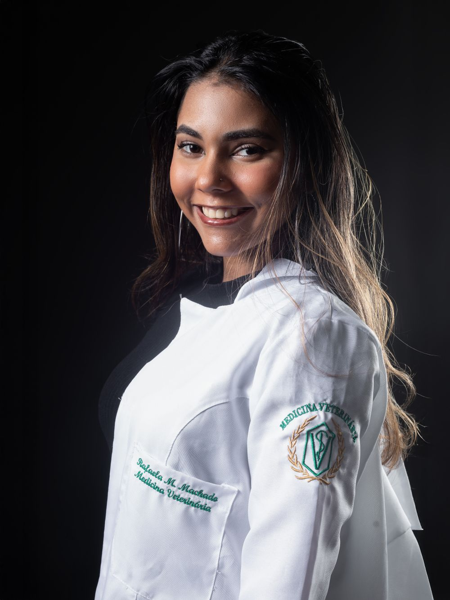
Salud bucal y control cardíaco de pacientes crónicos y seniors.
“Llevo a mi perra desde cachorra. Siempre me explican todo con paciencia y los controles llegan con aviso, nunca me olvido de una vacuna.”
“Mi gato se estresa mucho fuera de casa y la sala separada para gatos hizo toda la diferencia. Atención impecable.”
“A las 3 de la mañana tuve una urgencia y me atendieron al instante. Esa tranquilidad no tiene precio.”
Escribinos y te respondemos ya
La guardia está activa las 24 horas. Si podés, avisá antes de venir para que el equipo ya esté preparado.
La guardia recibe a tu mascota y atiende la urgencia.
Con imágenes y laboratorio en la clínica, te explicamos qué pasa.
Si necesita quedarse, la cuidamos con control las 24 horas.
Te explicamos los cuidados y coordinamos el seguimiento.
Pedí tu turno o acercate a conocernos. La primera consulta de control incluye la apertura de la historia clínica digital.
Reservá tu turno